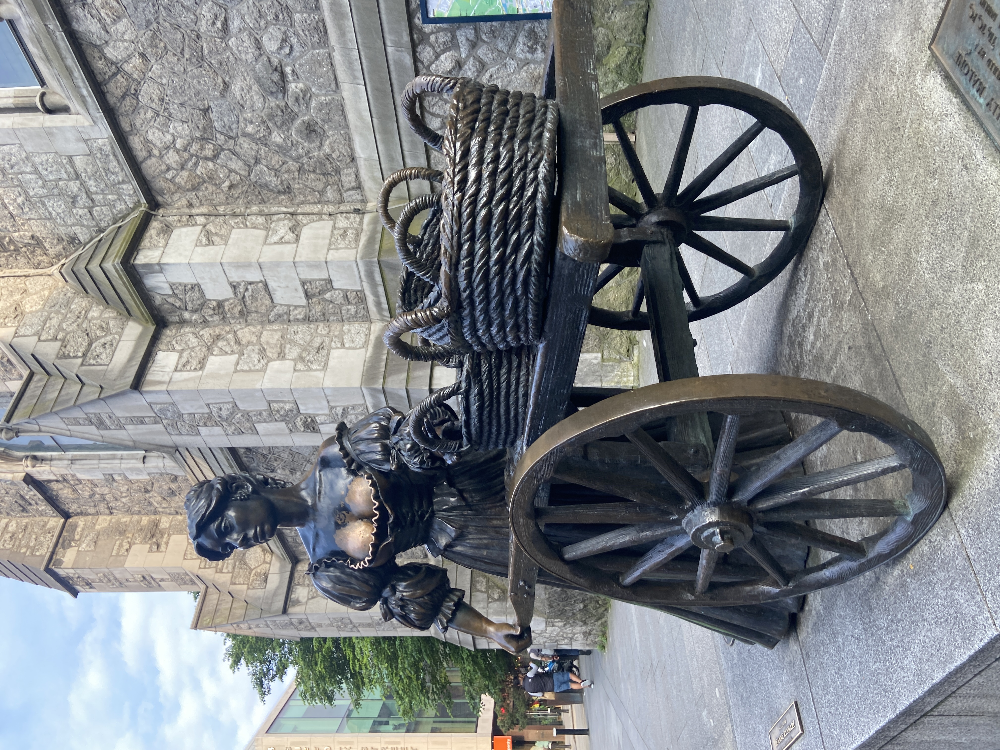
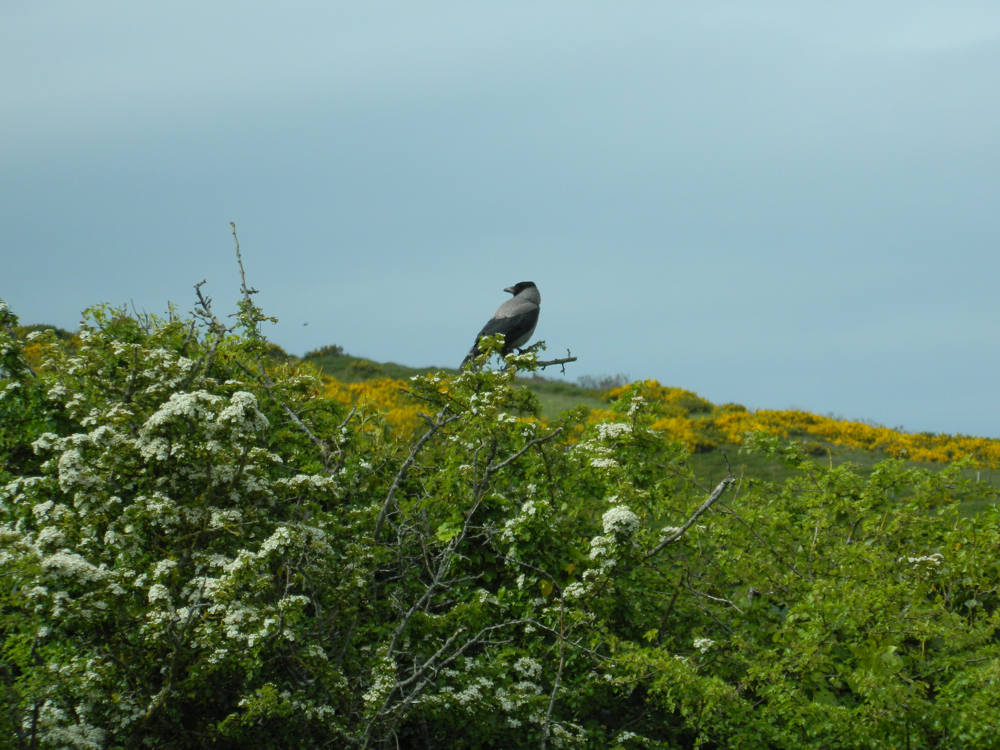
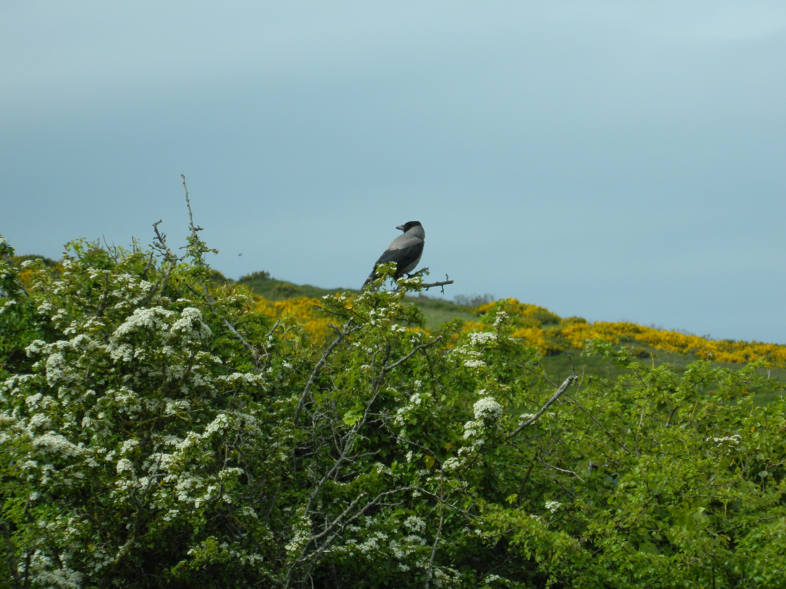
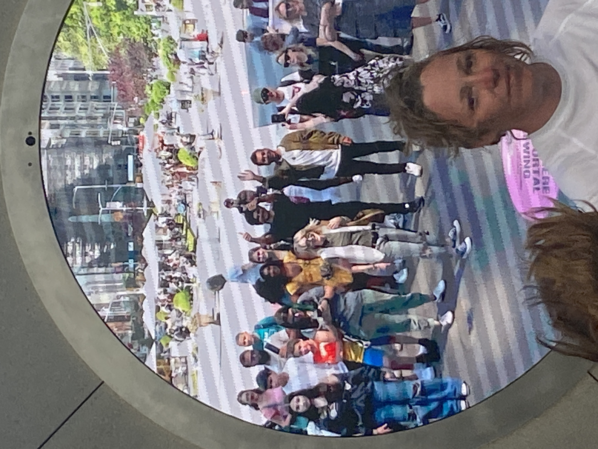
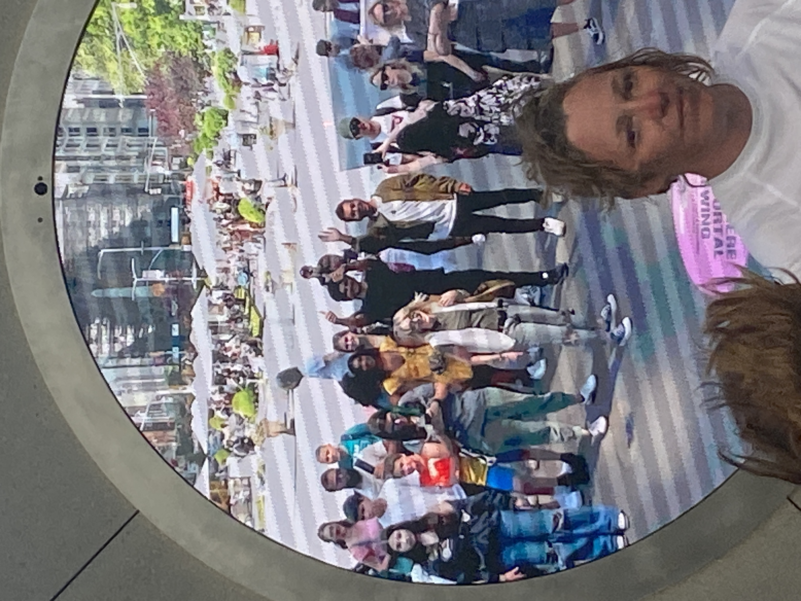

Today we played around with learning how to create accordions
within our webpage. We implemented them using JavaScript, and
first tested them on our blogs. Then we played around with
MixItUp, an
open-source way of categorizing photos or other objects into
groups by clicking on them. Finally, I worked on creating an
on-click animation for the
BeReals in my Dublin page so
that you can interact with them in a similar way to real BeReals.
After class, Lauren and I grabbed lunch at
The Fumbally, where I got
their incredible lentils again. It was the perfect warm meal for a
cloudy day. Then we headed home to drop off our things, and met up
with the rest of the group at Trinity to walk to the
Google Ireland
campus together. Walking through the grounds of Trinity was
absolutely beautiful, especially because we got a little sun
today. It's a magnificent campus, and I hope that during my time
here I will be able to see the
Long Room
in the library and the
Book of Kells. We took our time strolling through the campus and still got to
the Google Ireland building early! We got an insightful tour of
the Ireland office from Wanja, Ganesh, and Eoin. It was
interesting to hear their opinions on how Google and other big
tech companies have changed in the last few years, especially with
the current job market. The Ireland campus itself was incredibly
large, and we were able to tour 3 of their buildings.
Once the tour was over, a lot of us walked to the Grafton street
area to peruse the streets. We stopped at
Sweny's Pharmacy, a place my
dad recommended, and had the most special experience. It was a
miniscule place, and I felt like we were cramming it full just
with our small group. The worker at the bookstore asked us to do a
reading of a few lines of Ulysses, after somehow spawning enough
copies for everyone immediately. Anastasia and I read a passage
(which was terrifying in the way that it reminded me of reading
aloud in middle school), before a sprightly elderly man walked in
with over 10 Icelandic people and proclaimed that he was "Going to
sing his new friends a song!". He sang a Gaelic song that he told
us he sang to Lana del Rey a few months prior (which led her to
tears), and his cover of
'Molly Malone''. He taught us the words to 'Molly Malone' and we all joined in
on the chorus, which was a very special and incredibly random
experience. That whole event stayed in my head all day because of
how wild of an occurrence it was. I loved every minute of it, and
the entirety of today really felt like Dublin at its finest.
Everything was buzzing with vibrance and vitality.
After Sweny's we continued to explore Grafton street and ended up
at the Muji store, where we got
some new pens. From there we explored Grafton street, and ended up
getting pizza at Mani and
getting ice cream at
Murphy's, which was
absolutely amazing. I got the Irish Garden and Honeycomb Caramel
flavors, and both were fantastic. We paid a necessary visit to the
Molly Malone
statue and the
Umbrella Alley, and window shopped around Grafton Street some more. Then, Mari,
Sophie, Sarah and I sat at
Ciss Maddens, a pub on
Drury Street, to people watch and enjoy the lively environment of Dublin on a
Friday night. It felt like there was something in the air today
(and everyone in our program agrees), I've been in the best mood
I've been in this whole trip and feel so energized, and it seems
like everyone I've passed today was feeling the same way too.
Sophie and I sipped on some cocktails while writing postcards to
our loved ones with our new pens, and it was a very bright way to
start a Friday night. Once I got back to our room, Anastasia and
decided to have a lower energy Friday night that still allowed us
to experience Dublin's pubs, and go to the bar down the street for
one pint. I remember during our orientation that someone described
pubs as Dublin's third place, and the one we went to,
The Liberty Belle,
really made that statement feel true. There was a range of people
in there, from elderly regulars, to someone celebrating their
confirmation, to mates watching a rugby match, to some people our
age enjoying a nice Friday out on the town. It was sweet to
experience a smaller, more local pub that had a lot of history and
loyalty associated with it. They also have a five Euro toastie and
tea deal, which we will most definitely be back for!




 



 
